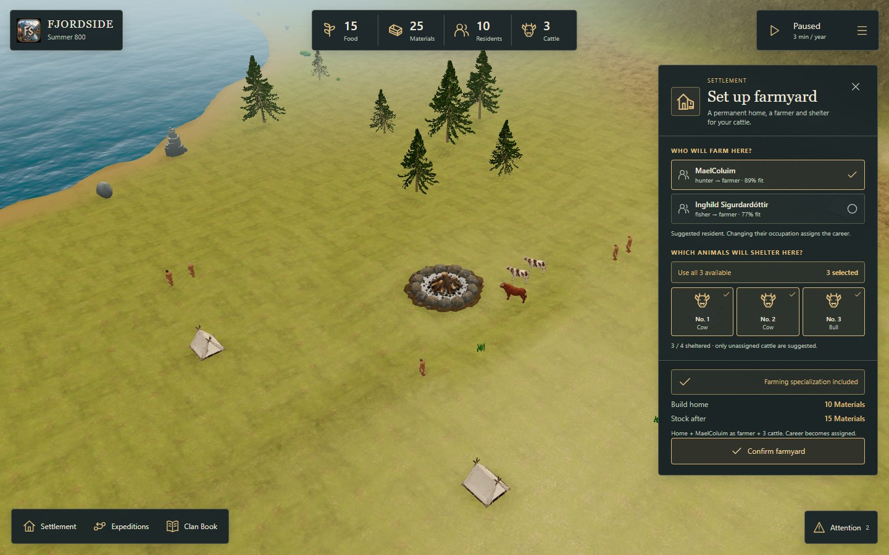
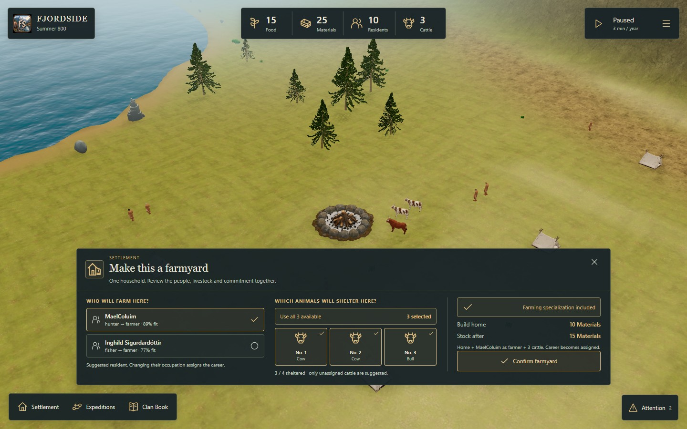
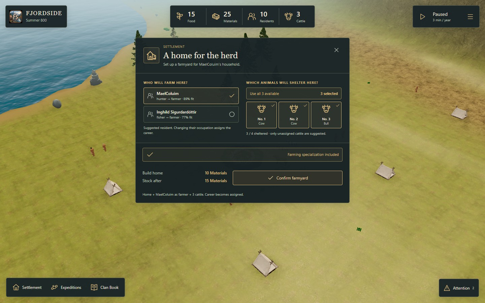

A · Right inspector
Choices and commitment stay at the edge. Best measured world coverage while setting up the farmyard.
75.5% world visible · 3 clicks to complete
Try layout A →
B · Bottom task tray
Compare residents, animals and cost side by side. More of the foreground is covered.
69.0% world visible · 3 clicks to complete
Try layout B →
C · Context and focus
A small selection summary expands into a focused task. The decision occupies the centre of the world.
69.7% world visible · 3 clicks to complete
Try layout C →